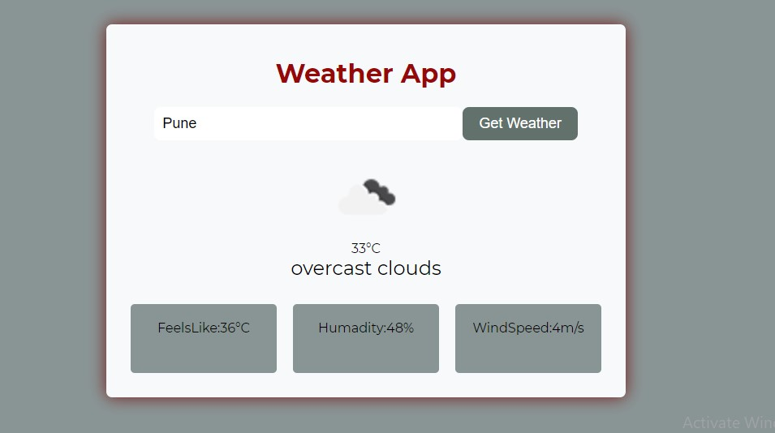
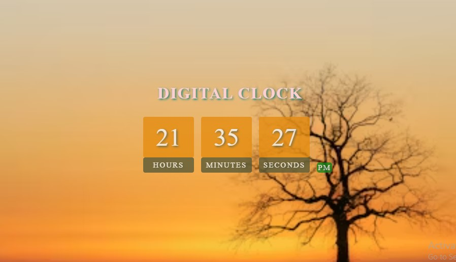
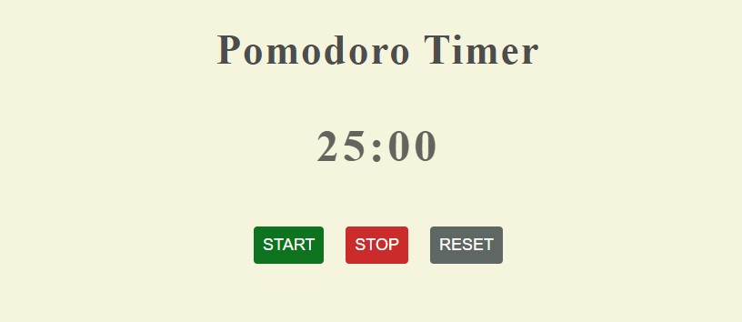
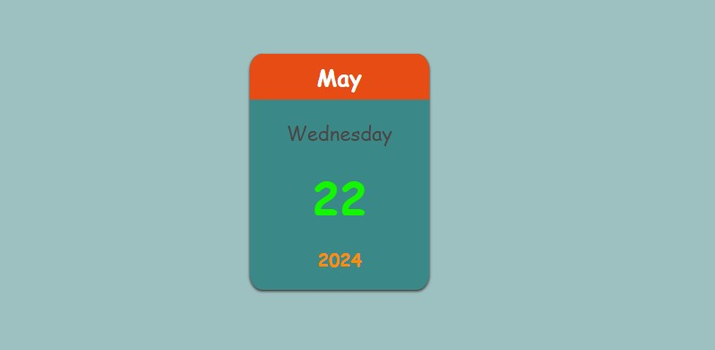

Projects

Weather-App Weather apps use science and technology to predict the weather conditions at a specific location and time. It can provide detailed local and worldwide weather forecasts, including the current temperature, sunrise and sunset times,Humidity and Wind speed.
Weather-App Weather apps use science and technology to predict the weather conditions at a specific location and time. It can provide detailed local and worldwide weather forecasts, including the current temperature, sunrise and sunset times,Humidity and Wind speed.

Digital-clock A digital clock app shows the current time in a simple, easy-to-read digital format. The app syncs with your device's time settings for accuracy.Some advanced versions offer world clocks.
Digital-clock A digital clock app shows the current time in a simple, easy-to-read digital format. The app syncs with your device's time settings for accuracy.Some advanced versions offer world clocks.

Pomodoro-Timer A Pomodoro timer app helps you improve productivity by breaking your work into focused intervals, typically 25 minutes, followed by short breaks. It features a simple timer, notifications for breaks. Ideal for time management and maintaining concentration.
Pomodoro-Timer A Pomodoro timer app helps you improve productivity by breaking your work into focused intervals, typically 25 minutes, followed by short breaks. It features a simple timer, notifications for breaks. Ideal for time management and maintaining concentration.

Mini-Calender A mini calendar app that shows only the year, month, and date offers a streamlined view for quick reference. It displays the current month with the dates clearly marked, allowing you to easily track the day without additional features or distractions. Perfect for a minimalist approach to date tracking.
Mini-Calender A mini calendar app that shows only the year, month, and date offers a streamlined view for quick reference. It displays the current month with the dates clearly marked, allowing you to easily track the day without additional features or distractions. Perfect for a minimalist approach to date tracking.